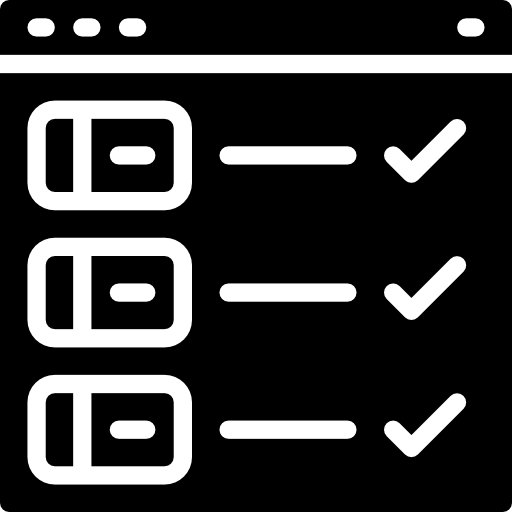
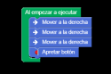

Aclárate antes de empezar
Programa

- Definición
-
Un programa informático o programa de computadora es una secuencia de instrucciones u órdenes basadas en un lenguaje de programación que una computadora interpreta para resolver un problema o una función especifica..
- Ejemplo
-
He elaborado un programa para que se enciendan las luces de una maqueta que he construido.
Algoritmo

- Definición
-
Es un conjunto de instrucciones que permite resolver un problema concreto.
- Ejemplo
-
¿Eres capaz de decirme el algoritmo para enviar una foto por Instagram?
Programación por bloques

- Definición
-
En la programación por bloques, las instrucciones del programa se representan mediante piezas que encajan unas a continuación de otras, lo que nos permite interpretar fácilmente el flujo del programa.
- Ejemplo
-
La programación por bloques facilita la interpretación de un programa informático.
Oscilar
Definición
-
En el contexto de los movimientos, un movimiento oscilante u oscilación es aquel que se realiza durante un tiempo en una dirección y otro tiempo en otra. En el contexto de un circuito electrónico o un sistema de luces, una oscilación es un cambio entre dos situaciones, en cada una de las cuales se está un tiempo al que se llama período.
- Ejemplo
-
El péndulo de un reloj realiza oscilaciones que duran siempre lo mismo.
Shield
Definición
-
Un shield de Arduino es una placa que se puede colocar sobre él, modificando o ampliando las funcionalidades básicas que trae de serie.
- Ejemplo
-
Vamos a usar en este trabajo el shield Imagina TdR STEAM.
 Una vez que has
Una vez que has